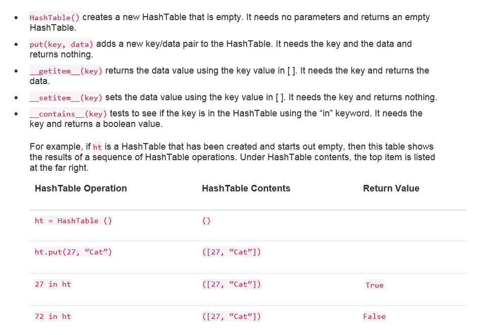
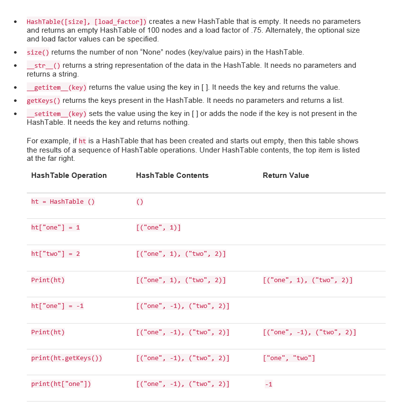

Hash Table
Big-O Efficiency: Can Approach O(1)
A hash table is a collection of items which are stored in such a way as to make it easy to find them later. Each position of the hash table, often called a slot, can hold an item and is named by an integer value starting at 0. For example, we will have a slot named 0, a slot named 1, a slot named 2, and so on. Initially, the hash table contains no items so every slot is empty. We can implement a hash table by using a list with each element initialized to the special Python value None. Figure 1 shows a hash table of size m = 11. In other words, there are m slots in the table, named 0 through 10.
Figure 1

The mapping between an item and the slot where that item belongs in the hash table is called the hash function.
The hash function will take any item in the collection and return an integer in the range of slot names,
between 0 and m - 1. Assume that we have the set of integer items
54, 26, 93, 17, 77, and 31.
Our first hash function, sometimes referred to as the “remainder method,” simply takes an item and divides
it by the table size, returning the remainder as its hash value (h(item) = item % 11). Table 4 gives all of the
hash values for our example items. Note that this remainder method (modulo arithmetic) will typically be present
in some form in all hash functions, since the result must be in the range of slot names.
Item Hash Value
54 10
26 4
93 5
17 6
77 0
31 9
Once the hash values have been computed, we can insert each item into the hash table at the designated
position as shown in Figure 2. Note that 6 of the 11 slots are now occupied. This is referred to as the
load factor, and is commonly denoted by λ = numberofitems/tablesize. For this example, λ = 6/11.
Figure 2

Now when we want to search for an item, we simply use the hash function to compute the slot name for the item and then check the hash table to see if it is present. This searching operation is O(1), since a constant amount of time is required to compute the hash value and then index the hash table at that location. If everything is where it should be, we have found a constant time search algorithm.
Below is an example of a Hash Table. The available operations are shown in Fugure 3:
Figure 3

Description of Excercise:
Implement the in method (__contains__) for the hash table Map ADT implementation.
Below is an expanded example of a Hash Table. The available operations are shown in Fugure 4:
Figure 4
